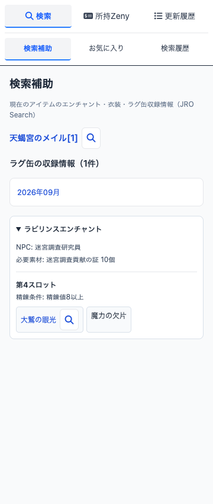
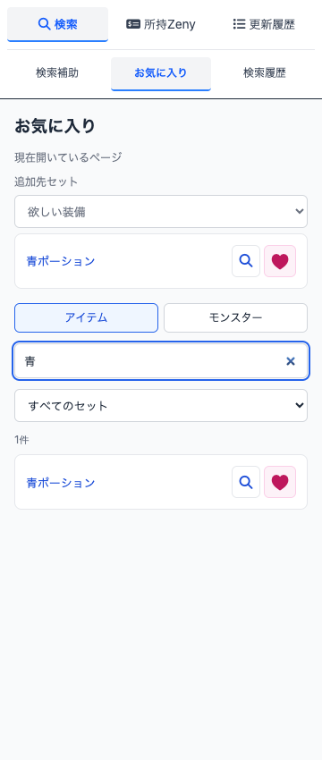
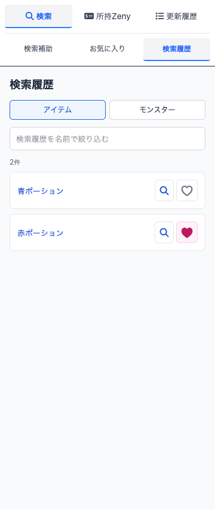
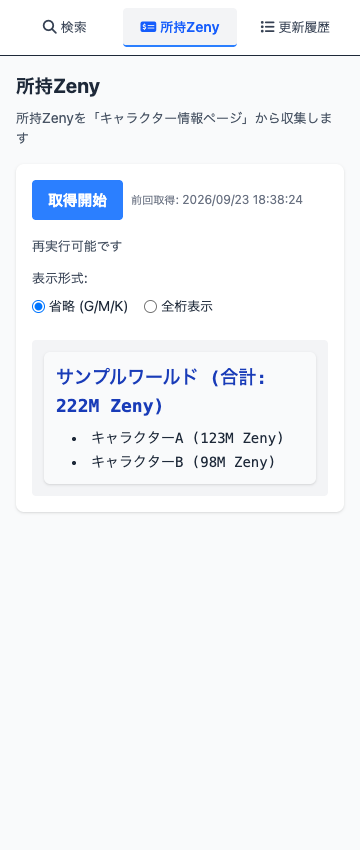

Chrome 拡張機能 · JRO Tools Plus
公式ページの横で、調べる。
RO公式のアイテムページを見ながら、JRO Searchのエンチャント・収録情報をサイドパネルで確認できます。お気に入りや閲覧履歴にも、そこから移動できます。
サイドパネルの掲載画面は開発版 2026.9.3 をサンプルデータで表示した例です。Chrome Web Store の配布版とは画面や機能が異なる場合があります。

ドロップ率の目安を、アイテム名の横に。
RO公式ツールのモンスター・マップ詳細で、ドロップアイテム名の横に率区分に応じた目安を表示します。たとえば「バフォメット（星座の塔）」では、エルニウムは「約75%」、バフォメットカードは「0.3%以下」です。
数値は目安で、実際の入手を保証するものではありません。拡張機能を有効にした Chrome でこの公式ページを開く と確認できます。

見つけたアイテムを、あとから探しやすく。
公式のアイテム・モンスター詳細で登録したお気に入りと閲覧履歴を、サイドパネルから確認できます。名前で絞り込み、対象を切り替え、JRO Searchの詳細へ進めます。
お気に入りセットと履歴は、同じ Chrome プロファイル内の JRO Search と共有します。


所持Zenyを、キャラクターごとに。
公式のキャラクター情報ページで「取得開始」を押すと、キャラクターごとの所持Zenyとワールド別の合計をまとめて表示します。結果は Chrome 内に保存され、全桁表示と省略表示を切り替えられます。

使い始める
- Chrome Web Storeで配布版を確認する掲載画面は開発版のため、配布中の機能をストアで確認してください。
- RO公式の対象ページを開く検索補助は公式アイテム詳細、ドロップ率の目安は公式モンスター・マップ詳細、所持Zenyは公式キャラクター情報ページで利用します。
- 拡張機能アイコンからサイドパネルを開く検索補助・お気に入り・検索履歴・所持Zenyを切り替えられます。
対応と保存
- 対応ブラウザ
- Google Chrome（開発版の最低対応バージョンは116）
- 対象ページ
- RO公式ツールのアイテム・モンスター・マップ、公式キャラクター情報、JRO Search
- ドロップ率の目安
- RO公式のモンスター・マップ詳細にあるドロップアイテム名の横へ、率区分に応じた目安を表示します。
- 保存先
- お気に入り・閲覧履歴・所持Zenyの取得結果は Chrome のローカルストレージに保存します。JRO Search との共有は同じ Chrome プロファイル内に限られ、別の端末へ自動同期されません。
非公式ツールです
JRO Tools Plus と JRO Search は、ラグナロクオンラインの運営会社による提供・保証を受けていません。